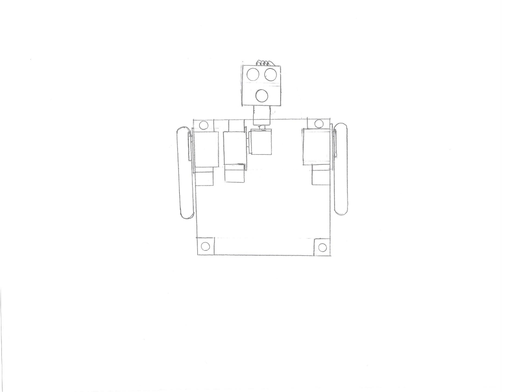
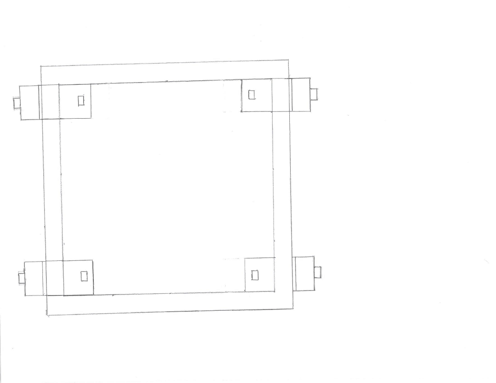
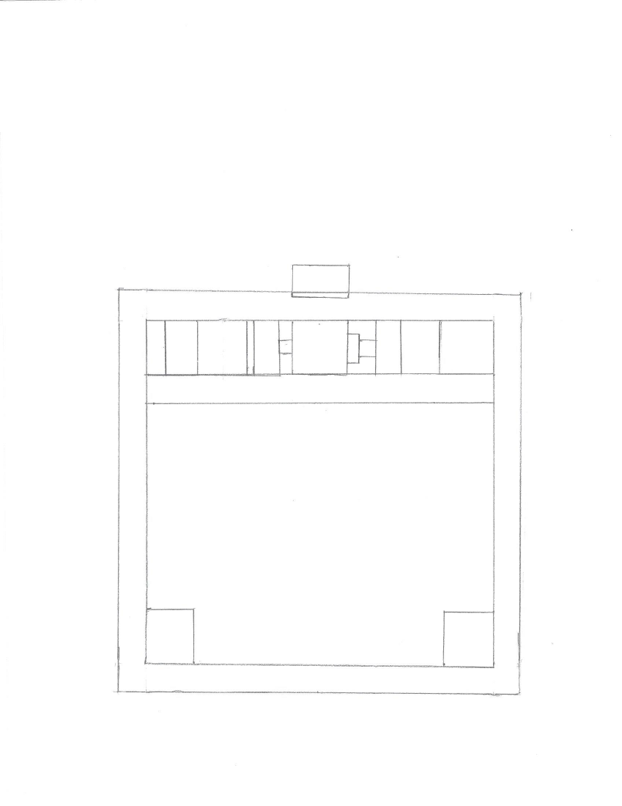
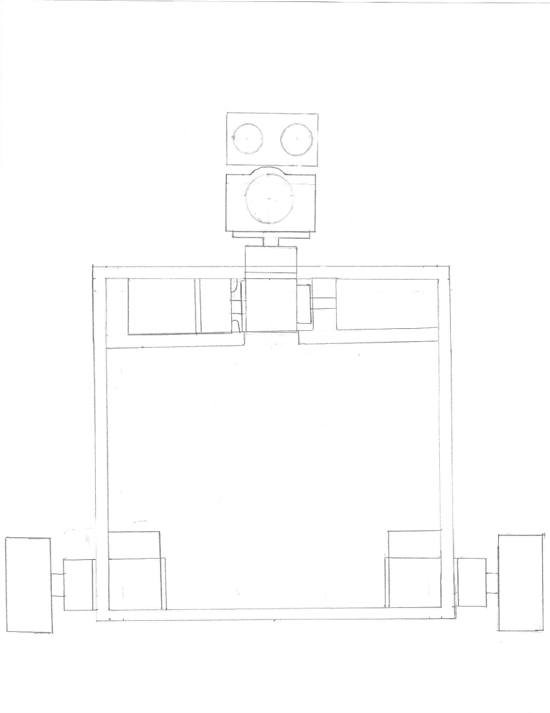
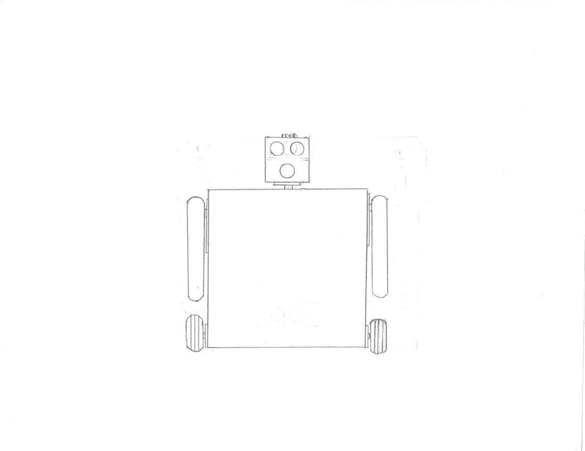
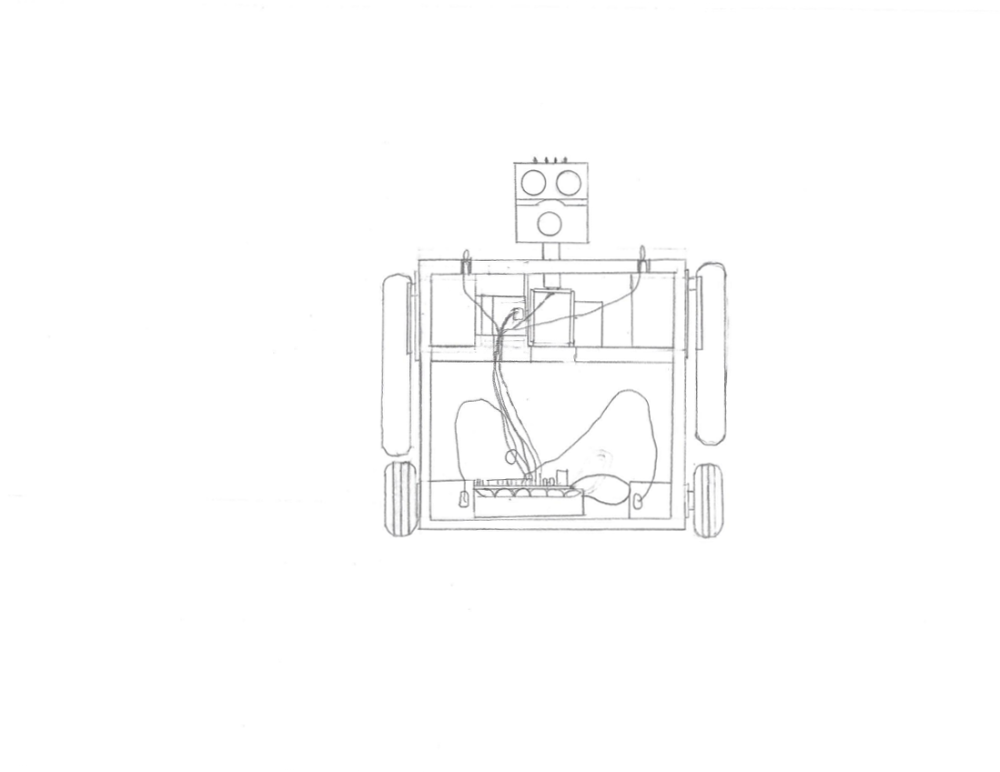

This was a design for a small robot built from an EZ-Robot V3 kit. It was never built. This robot's head would house an ultra-sonic sensor and a camera. The arms pivot on servos and the wheels are driven by continuous rotation servos. I will not give commentary on any of the pictures below because it is an old design that I don't remember very well. It was probably designed around 2014, but that is just a guess. It is probably not useful in any way, but it is here nonetheless.




